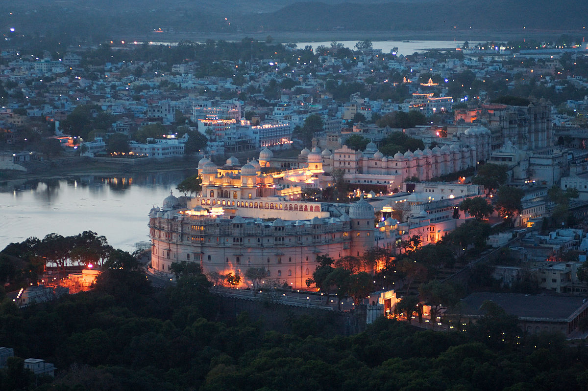
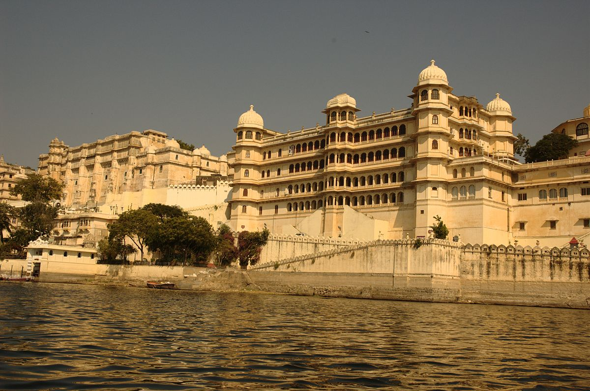
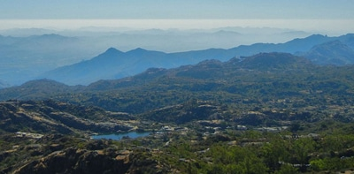

Udaipur is a beautiful city in the Indian State of Rajasthan. The master piece of the city is the floating lake palace in Lake Pichola. Udaipur is also well connected to the major cities of India by land, rail or air. Because of its picturesque and scenic locations, Udaipur has been the shooting location for many Hollywood and Bolllywood movies. Udaipur is a popular tourist destination in India. It is also known as the City of Lakes. The Pichola lake, Fateh Sagar Lake, Udai Sagar and Swaroop Sagar in this city are considered some of the most beautiful lakes in the state.
Read More

| Temp | Humidity |
|---|---|
Why Udaipur?

Nearby Places

Coming to Udaipur is an ultimate package as one can explore many beautiful places around Udaipur. Apart from the local attractions within the city, there are several charming places to see around Udaipur. Each place has a charm which can mesmerize you to the core. Such places include Nathdwara , Ranakpur ,Chittorgarh ,Haldighati , Mount Abu , Eklingji , Kumbhalgarh Wildlife Sanctuary.
Read More